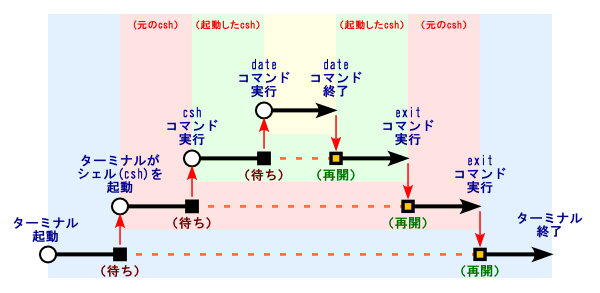

typing コマンドにある引数を指定すれば，テスト用のテキストを使うことができます．引数は口頭で伝えます．
| テスト用テキストの使用 |
|---|
% typing ないしょ[Enter] |
ターミナルのウィンドウを開いたときに実行されるシェル (csh) 自体も，ひとつのコマンドです．したがって，これをコマンドとして実行することもできます．
| csh | |
|---|---|
| csh を起動してみる． |
% csh[Enter]
% ←何も起こらなかったように見える
|
| 実は csh の中で csh が起動している．だから，それまでと変わらずコマンドが使える． |
% date[Enter] 2003年 7月 2日(水曜日) 11時38分38秒 JST |
| csh を終了してみる．シェルを終了させるには exit コマンドを使う． |
% exit[Enter]
% ←やっぱり何も起こらなかったように見える
|
| もう一度 exit コマンドを入力してみる． こんどはターミナルのウィンドウが閉じる． |
% exit[Enter] |
cshコマンドを実行しても，何も起こらなかったように見えます．しかし，これは元の csh とは異なる，別の csh が次のコマンドの入力を待っている状態です．だから，この状態でも他のコマンドを実行することができます．
この状態で exit コマンドを実行すると，先ほどコマンドとして実行した csh が終了し，もとの csh が次のコマンドを待っている状態になります．だから，この場合も何も起こらなかったように見えます．
そしてもう一度 exit コマンドを入力すると，ターミナルのウィンドウが閉じて（消えて）しまいます．これはターミナル (gnome-terminal) が起動したシェル (csh) の終了をずっと待っており，シェルが終了するとターミナル自身も終了するように作られているからです．

なお，シェルで exit コマンドの代わりに Ctrl-D をタイプすること（すなわち入力データの終了）でも，シェルを終了することができます（これを無効にする設定もあります）．利用者が入力するコマンドは，シェルにとっては入力データというわけです．
シェルへのコマンド入力がシェルにとっては入力データに他ならないなら，シェルに入力するコマンドを一旦ファイルに記録しておいて，それをシェルの入力に与えることもできるはずです．
| シェルへのデータ入力 | |
|---|---|
| date, cal, pwd コマンドを連続して実行してみる． |
% date[Enter]
2003年 7月 2日(日曜日) 11時38分38秒 JST
% cal[Enter]
7月 2003
日 月 火 水 木 金 土
1 2 3 4 5
6 7 8 9 10 11 12
13 14 15 16 17 18 19
20 21 22 23 24 25 26
27 28 29 30 31
% pwd[Enter]
/home/s3/s085000
|
| cat コマンドを使って，a というファイルの中に date，cal，pwd を書き込んでみる． |
% cat > a[Enter] date[Enter] cal[Enter] pwd[Enter] Ctrl-D |
| ファイル a の内容を見てみる． |
% cat a[Enter] date cal pwd |
| ファイル a の内容を csh の入力に流し込んでみる． |
% csh < a[Enter] |
つまりシェルのコマンドを，キーボードからではなくファイルから与えることによって，一連のコマンドを連続して実行することが可能になります．これは同じ作業を繰り返す場合などに便利です．また，実はシェルも cat と同様に，引数に与えたファイル名のファイルからデータを読み取ることができます．
| シェルの引数 | |
|---|---|
| csh コマンドの引数にファイル名を指定する． |
% csh a[Enter] |
ファイルの先頭でコマンドを解釈するシェルを明示し，そのファイルに実行権を与えれば，それを新しいコマンドとして使えるようになります．このようなファイルをシェルスクリプトと呼びます．csh 用のシェルスクリプトは，csh スクリプトと呼びます．
| シェルスクリプト（csh スクリプト）の作成 | |
|---|---|
| cat コマンドを使って c というファイルを作る．中身は１行だけ． |
% cat > c[Enter] #!/bin/csh -f[Enter] Ctrl-D |
| cat コマンドを使って，c の後ろに a の内容を追加する． |
% cat a >> c[Enter] |
| ファイル a の内容を見てみる．c の内容に a の内容が追加されていなければやり直し． |
% cat c[Enter] #!/bin/csh -f date cal pwd |
最初の行の "#!" によって，そのシェルスクリプトを解釈するシェルを指定します（シェルには csh のほかに sh や bash，ksh，zsh など複数のものがあります）．上のシェルスクリプトでは /bin というディレクトリにある csh コマンドによって解釈しますから，それを絶対パスで指定します．csh に与えているオプション -f は，csh 起動時の設定ファイルの読み込みを省略します．詳しくは man tcsh を読んでください．
| ファイルを実行可能にする | |
|---|---|
| ファイル c の保護モードを確認する． |
% ls -l c[Enter] -rw-r--r-- 1 s085000 students 27 May 7 09:30 c |
| chmod コマンドを使って c に実行許可を追加する． |
% chmod +x c[Enter] |
| ファイル c の保護モードに x が追加されたことを確認する． |
% ls -l c[Enter] -rwxr-xr-x 1 s085000 students 27 May 7 09:30 c |
なお，ファイルによっては x のところが t や s になっていることがあります．それぞれ特別な意味を持ちますが，ここでは割愛します．
| シェルスクリプトの実行 | |
|---|---|
| ファイル c を実行する． |
% ./c[Enter] |
"./c" はカレントディレクトリ (.) にある c を実行するということです．ちゃんと実行できたでしょうか？
変数はプログラム中でデータを一時的に格納しておく入れ物です．プログラミング言語において変数は，最も基本的で重要な要素です．これまでに述べたようにシェルもプログラミング言語としての側面を持っていますから，変数を活用すればさらに柔軟な処理を行うことが可能になります．また一部の変数は，シェル自身の動作を制御するためにも使用されます．
csh の場合，シェル変数へ値を格納するには set コマンドを使います．また変数の値を参照する（取り出す）には，変数名に "$" を付けます．
| シェル変数 (csh) と set コマンド | |
|---|---|
| 変数 name に ichiro を代入してみる．変数 name は自動的に作られる． |
% set name=ichiro[Enter] |
| echo コマンドを使って，name の内容を見てみる．echo コマンドは引数をそのまま標準出力に出力する． |
% echo $name[Enter] ichiro |
| echo には複数の引数が指定できる． |
% echo My name is $name[Enter] My name is ichiro |
| 代入する文字がスペースを含むときは "～" や '～' でくくる． |
% set my="My name is"[Enter] % echo $my $name[Enter] My name is ichiro |
| set コマンドは複数の変数への代入ができる．expr は引数を数式とみなして計算するコマンド．'+' の前後の空白は省略できない． |
% set v1=10 v2=20[Enter] % echo $v1 $v2[Enter] 10 20 % expr $v1 + $v2[Enter] 30 |
| 値が数値なら set の代わりに "@" を使うと，変数への代入のときに計算ができる． |
% @ v3=$v1 + $v2[Enter] % echo $v3[Enter] 30 |
| set コマンド単独で実行するとシェル変数を全部表示する． |
% set[Enter] |
| シェル変数を消去するには unset コマンドを使う． |
% unset v1 v2 v3[Enter] % echo $v1[Enter] v1: 変数を定義していません． |
シェル変数の中には，シェルの動作の制御などに使われるものがあります．
シェルにおいても，入力の終了（EOF = End of File）を示す Ctrl-D をタイプすると，シェルが終了してしまいます．これを防ぐためには ignoreeof（ignore EOF = EOF を無視する）というシェル変数を設定します．
| ignoreeof 変数 | |
|---|---|
| シェルで Ctrl-D をタイプしてみる．多分，シェルが終了して，ターミナルのウィンドウが閉じる． |
% Ctrl-D |
| もう一度ターミナルを開いて，シェル変数 ignoreeof をセットする． |
% set ignoreeof[Enter] |
| また Ctrl-D をタイプしてみる．今度はシェルが終了しない． |
% Ctrl-D csh終了は"exit"を使用して下さい |
| exit コマンドで csh が終了する． |
% exit[Enter] |
csh を終了したので，ターミナルのウィンドウが閉じてしまいます．もう一度ターミナルを開いてください．
コマンドの標準出力をファイルにリダイレクトしたとき，リダイレクト先のファイルが既に存在すれば，もとから合った内容は消えて，リダイレクトしたデータと置き換わってしまいます．リダイレクトによって間違ってファイルの内容を消してしまわないようにするには，noclobber というシェル変数を設定します（clobber = 不注意な上書きによるデータ破壊）．
| noclobber 変数 | |
|---|---|
| echo コマンドを使って，a に「かばやねん」を入れる．a には「かばやねん」が入っている． |
% echo かばやねん > a[Enter] % cat a[Enter] かばやねん |
| echo コマンドを使って，a に「たこやねん」を入れる．それまでに a に入っていた「かばやねん」は消えて，かわりに「たこやねん」が入っている． |
% echo たこやねん > a[Enter] % cat a[Enter] たこやねん |
| シェル変数 noclobber を作る． |
% set noclobber[Enter] |
| echo コマンドを使って，e に「いかやねん」を入れてみる．こんどはエラーになる． |
% echo いかやねん > a[Enter]
a と言うファイルは既に存在します. ←エラーになる
|
| でも ">!" を使うと無理やり入れることができる． |
% echo いかやねん >! a[Enter] ←エラーにならない
% cat a[Enter]
いかやねん
|
今度はプロンプト（入力促進符号，シェルがコマンド待ちであることを示す記号，ここでは % のこと）を変えてみましょう．プロンプトは prompt というシェル変数を使って設定します．
| prompt 変数 | |
|---|---|
| prompt 変数に値を代入してみる．引用符号 (") は日本語の入力モードを抜けてから入力すること． |
% set prompt="なんやねん "[Enter] なんやねん |
| プロンプトにカレントディレクトリを含めることができる．%c がカレントディレクトリ名に置き換わる．"~" はホームディレクトリを示す．これは tcsh の拡張機能である． |
なんやねん set prompt="%~ >"[Enter] ~ >cd /usr/bin[Enter] /usr/bin >cd[Enter] ~ > |
| プロンプトにイベント番号（何回目のコマンドコマンドか）を含める．"!" は csh では特別な意味を持つ文字なので，前に "\" を付けてその意味を打ち消す．"＼"(バックスラッシュ)は，画面やキーボード上では"￥"（円記号）で表示されることがあります． |
~ >set prompt="%~ \!> "[Enter] ~ 6> echo $prompt[Enter] %~ !> ←"\"自体は残らない ~ 7> ←コマンドを実行するたびに数が増える |
これらの設定を解除するには，unset コマンドを使ってシェル変数を消去します．
| unset コマンド | |
|---|---|
| prompt 変数を消去すると，シェルのプロンプトが現れなくなる． |
% unset prompt[Enter]
←プロンプトが表示されない
|
| ignoreeof 変数を消去すると，Ctrl-D でシェルが終了するようになる． |
% unset ignoreeof[Enter]
Ctrl-D
（シェルが終了するため，ウィンドウが閉じる）
|
通常使うコマンドは，/usr/bin など，どこか他のディレクトリに収められています．コマンドを実行するには，それが収められている場所も含めて指定する必要があります．しかし，それではコマンドが長くなりすぎるので，サーチパスを設定して，どこにあるコマンドを使うのかを指定しています．
| サーチパス | |
|---|---|
| date コマンドを実行してみる． |
% date[Enter] 2002年 5月 8日 水曜日 11:30:45 JST |
| which コマンドを使えば，どこにあるコマンドを実行したのか調べることができる． |
% which date[Enter]
/bin/date ←date コマンドは /bin ディレクトリにある
|
| コマンドを絶対パス名で指定することもできる． |
% /bin/date[Enter] 2002年 5月 8日 水曜日 11:31:22 JST |
| サーチパスに含まれないところにあるコマンドは実行できない． |
% fortune[Enter] fortune: コマンドが見つかりません． |
| しかし，これもコマンドの絶対パス名を指定すれば実行できる．fortune は「今日の一言」みたいなコマンド． |
% /usr/games/fortune[Enter]
(何かメッセージが出る）
|
| シェル変数 path を表示する．コマンドはこれらのディレクトリの中から，この順番に探される(表示される内容はこの限りではない）．/usr/games は含まれていない． |
% echo $path[Enter] /usr/local/bin /bin /usr/bin /usr/X11R6/bin |
| path に /usr/games を追加する． |
% set path=( $path /usr/games )[Enter] |
| path を確認する．/usr/games が含まれいているはず． |
% echo $path[Enter] /usr/local/bin /bin /usr/bin /usr/X11R6/bin /usr/games |
| もう一度 fortune を実行してみる．今度は実行できるはず． |
% fortune[Enter]
(何かメッセージが出る）
|
なお，set コマンドや次節の history コマンド，alias コマンドなどは csh の組み込みコマンドと呼ばれ，csh 自身が処理しています．したがって ls のように独立したコマンドはありません．
プログラミングなどをしていると，何度も同じコマンドを入力することがよくありますが，コマンドが長かったりすると結構面倒です．csh には以前に入力したコマンドを記録しておく機能がありますので，それを使って以前のコマンドを再利用できます．
| history | |
|---|---|
| シェル変数 history に，記録するコマンドの数を設定する． |
% set history=100[Enter] |
| history コマンドでこれまでに入力したコマンドの一覧が表示される． |
% history[Enter]
1 11:00 set prompt="なんやねん "
(中略)
17 11:20 history
|
| "!!" で直前に実行したコマンドを再度実行できる． |
% !![Enter]
history ←再実行するコマンドが表示される
|
| イベント番号 1 のコマンドを再度実行する． |
% !1[Enter] set prompt="なんやねん " なんやねん |
| 最近に実行した "ec" で始まるコマンドを再度実行する． |
なんやねん !ec[Enter] echo $prompt なんやねん |
| シェル変数 savehist を設定しておけば，csh 終了後もコマンドの履歴を覚えていてくれる． |
なんやねん set savehist=100[Enter] |
history 置換
- !!
- 直前に実行したコマンドを再度実行する．
- !番号
- 番号に指定したイベント番号のコマンドを再度実行する
- !コマンド
- コマンドで始まる最近のコマンドを再度実行する
なお，tcsh では矢印キーを使って以前のコマンドを呼び出したり，編集したりすることができます．他にもたくさんの機能がありますから，man コマンドを使って調べてください．
alias （エイリアス）コマンドを使って，コマンドに別名をつけることができます．alias の設定を解除するには，unalias コマンドを使います．
| alias | |
|---|---|
| "ls -l" に ll という別名を付ける．ll で ls -l が実行される． |
% alias ll 'ls -l'[Enter] % ll[Enter] |
| rm コマンドは有無を言わさずにファイルを消してしまう． |
% touch xxx[Enter] ←適当なファイル xxx を作る % rm xxx[Enter] % ←何も言わずにファイルを消してしまう |
| それではちょっと怖いので，rm に -i オプションを付ける．一応確認してくれる．消すなら y，消さないなら n を入力する． |
% touch xxx[Enter] ←適当なファイル xxx を作る % rm -i xxx[Enter] rm: remove `xxx'? y ←一応聞いてくれる |
| rm で必ず "rm -i" が実行されるようにする． |
% alias rm 'rm -i'[Enter] |
| rm コマンドを使ってファイルを消してみる．今度は -i オプションを付けなくても確認してくれる． |
% touch xxx[Enter] ←適当なファイル xxx を作る % rm xxx[Enter] rm: remove `xxx'? y ←こんどは -i を付けなくても聞いてくれる |
| 別名の途中にコマンドの引数を置きたいときは，!* を使う．この場合も "\" を使って "!" がもつ特別な意味を打ち消す． |
% alias lm 'ls -l \!* | less'[Enter] % lm .*[Enter] |
| alias の設定を解除するには，unalias コマンドを使う． |
% unalias lm[Enter] % lm .*[Enter] lm: コマンドが見つかりません. |
環境変数はシェル変数と似ていますが，シェル変数がシェル内でのみ有効な変数なのに対して，環境変数はそのシェルから起動したプログラムに引き継がれます．環境変数自体はオペレーティングシステム自体の機能です．
環境変数の設定には setenv コマンド，解除には unsetenv コマンド，一覧には printenv コマンドを使います．set コマンドとは異なり，setenv コマンドでは "=" は使いません．
| 環境変数 (csh) | |
|---|---|
| HENSU という変数を表示するだけのスクリプト b を作る |
% cat > b[Enter] #!/bin/csh -f[Enter] echo $HENSU[Enter] Ctrl-D |
| b を実行可能にする． |
% chmod +x b[Enter] |
| b を実行してみる．多分エラーになる． |
% ./b[Enter] HENSU: 変数を定義していません. |
| set コマンドでシェル変数に値を与えてもエラーになる． |
% set HENSU=10[Enter] % ./b[Enter] HENSU: 変数を定義していません. |
| setenv コマンドで環境変数に値を与える．今度は多分うまくいく． |
% setenv HENSU 10[Enter] % ./b[Enter] 10 |
シェル変数 path と環境変数 PATH や シェル変数 term と環境変数 TERM など，一部のシェル変数は環境変数と同期しています．
| シェル変数 path と環境変数 PATH | |
|---|---|
| シェル変数 path を見てみる． |
% echo $path[Enter] /usr/local/bin /bin /usr/bin /usr/X11R6/bin /usr/games |
| 環境変数 PATH を見てみる． |
% echo $PATH[Enter] /usr/local/bin:/bin:/usr/bin:/usr/X11R6/bin:/usr/games |
| シェル変数 path をひとつ切り詰めてみる．$path[1-4] は path の１番目から４番目までの要素を切り出す（最初 path には５つの要素が入っているとする）． |
% set path=( $path[1-4] )[Enter] |
| シェル変数 path をもう一度見てみる．ひとつ切り詰められている． |
% echo $path[Enter] /usr/local/bin /bin /usr/bin /usr/X11R6/bin |
| 環境変数 PATH をもう一度見てみる．これも切り詰められている． |
% echo $PATH[Enter] /usr/local/bin:/bin:/usr/bin:/usr/X11R6/bin |
ホームディレクトリの .cshrc というファイルに書いたコマンドは，シェルの起動時にあらかじめ実行されます．これを使ってシェルの初期設定ができます．
| .cshrc の作成 | |
|---|---|
| ホームディレクトリに戻る（今どこにいるのかわからないので）． |
% cd[Enter] |
| たとえば set history=100 を .cshrc に入れてみる． |
% cat > .cshrc[Enter] set history=100[Enter] Ctrl-D |
なお，この読み込みは csh の起動時にしか行われないので，.cshrc の設定は新たに開いたターミナルで有効になります．現在使っているシェルでその設定を有効にするには source コマンドを使います．
| .cshrc の読み込み | |
|---|---|
| source コマンドを使って，.cshrc を現在使っている csh に読み込む． |
% source .cshrc[Enter] |
.cshrc は csh の起動時に読み込まれるので，.cshrc を変更しなければ source コマンドを使用する必要はありません．
報告はメールで tokoi@sys.wakayama-u.ac.jp まで送ってください．Subject:（件名）は「課題１１」としてください．期限は７月８日中とします．